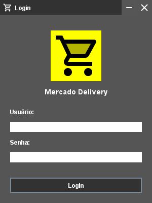
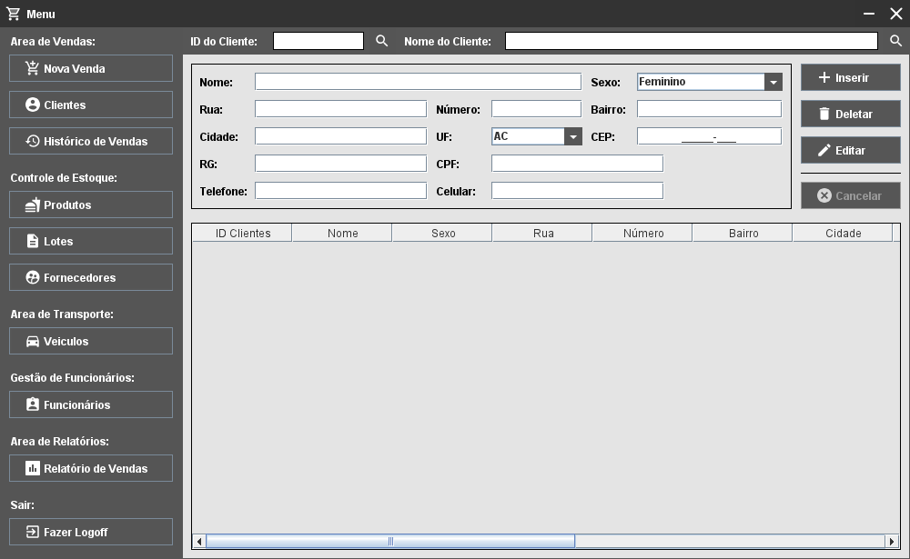

Projeto_19: Sistema CRUD para um Mercado Delivery
Status: [Descontinuado]
Apresentação:
Projeto desenvolvido na primeira metade de 2019 durante o terceiro semestre do curso de ciências da computação com o objetivo de desenvolver uma interface para um aplicativo desktop utilizando JAVA (Swing e AWT) como linguagem de desenvolvimento.
Sobre o Projeto:
A ideia para este projeto era ser um sistema CRUD para um supermercado que além de fornecer funções de controle de estoque e vendas teria como adicional as funcionalidades de controle de frota e entregas auxiliando assim vendas no modelo de negócios “delivery”.
Requisitos:
- Runtime Java versão 8 (ou superior).
Como usar:
Para acessar o sistema utilize o seguinte Login e Senha:
- Login: Admin
- Senha: Admin
Imagens:
Tela de Login:

Tela de Login do Projeto
Menu Principal:

Tela do Menu Principal do Projeto
To-Do:
- Componentizar a interface do programa facilitando assim a sua manutenção.
- Finalizar o restante das interfaces e eliminar as desnecessárias.
- Refatorar o código eliminando repetições desnecessárias.
- Implementar um banco de dados para a aplicação.
- Reimplementar o sistema de temas.